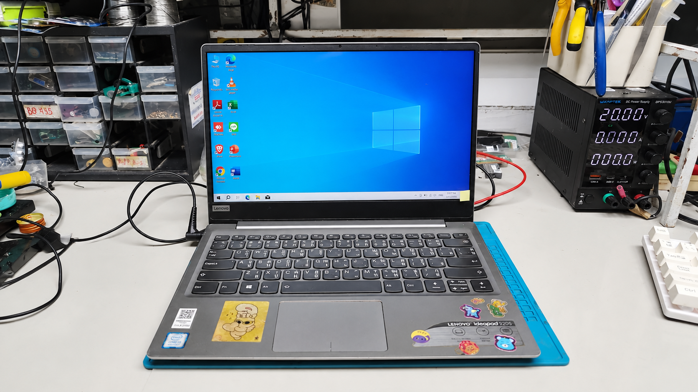

CASE STUDY
ผลงานซ่อมจริง (ก่อนซ่อม - หลังซ่อม)
รวมตัวอย่างเคสงานซ่อมคอมพิวเตอร์และโน๊ตบุ๊คจากลูกค้าที่ส่งซ่อม

บอร์ดช็อต
Lenovo Ideapad 320S
อาการเปิดไม่ติด ไฟไม่เข้า ช็อตภาคจ่ายไฟ GPU
ตรวจเช็คพบ MOSFET ภาคจ่ายไฟการ์ดจอช็อตลงกราว ทำการยกเปลี่ยนอะไหล่ใหม่ รัน Stress Test ผ่านเรียบร้อย...
อ่านเคสซ่อมนี้ เครื่องโดนน้ำ
เครื่องโดนน้ำ
ASUS TUF Gaming F15
น้ำหวานหกใส่คีย์บอร์ด บอร์ดช็อตเปิดไม่ติด
ดำเนินการแกะล้างบอร์ดด้วยน้ำยาเฉพาะ ไล่ความชื้น เปลี่ยนชิปไอซีชาร์จที่เสียหาย คืนชีพกลับมาใช้งานได้ปกติ...
อ่านเคสซ่อมนี้